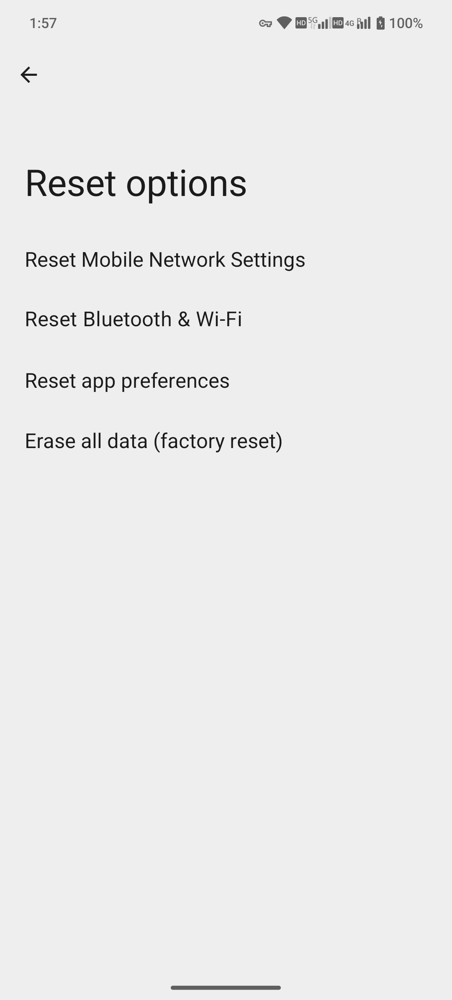

安全與恢復 / reset-scope
重置選項：網路、應用偏好與恢復出廠
明確三個重置入口的不同影響；本頁只解釋，不執行重置。
入口已核驗 · 操作待核驗
適用基線：MA1 · Android 15 · MAG1WW53。採集：2026-10-14。本頁為編輯草稿；除明確說明的操作外，步驟未執行驗證。
Settings → System → Reset options
前置條件
- 完整可驗證備份
- 機主憑據和恢復條件
- 當前任務未授權執行任何重置
逐步操作
- 開啟 Reset options 只檢視列表，不點後續執行按鈕。
- 當前本機顯示 Reset Mobile Network Settings、Reset Bluetooth & Wi-Fi、Reset app preferences、Erase all data (factory reset)。
- 需要排查網路時先用普通設定頁診斷；行動網路與藍芽/Wi-Fi 是分開的重置入口，具體影響以確認頁為準。
- 應用偏好重置可能影響預設處理和許可權等配置，不等於清理某個 App 的快取；確認頁未進入。
- 恢復出廠會涉及整機資料及認證保護，必須單獨確認和備份驗證；當前不執行。
- 發現版本不同顯示更多重置項時重新核驗，不把別的 Android 選單補進本版。
按鈕與選項
| 按鈕 / 選項 | 用途與邊界 |
|---|---|
| Reset Mobile Network Settings | 行動網路重置入口 |
| Reset Bluetooth & Wi-Fi | 藍芽與 Wi-Fi 重置入口 |
| Reset app preferences | 應用偏好重置入口 |
| Erase all data (factory reset) | 整機資料擦除入口 |
本批實際看到的英文標籤
- Reset Mobile Network Settings
- Reset app preferences
- Erase all data (factory reset)
- Reset Bluetooth & Wi-Fi
標籤出現只證明入口/選項可見；此列表不代表所有專案已操作。
正常結果與本次證據
四項列表已由截圖視覺複核；其中藍芽/Wi-Fi 標籤未被首輪 XML 標題提取識別，已補入清單。沒有開啟確認頁或執行重置。
取消、關閉與恢復
點返回退出。執行後的資料及偏好不保證可撤銷，因此不要用此頁做實際重置演練。
報錯與排查
- 想靠重置恢復錢包：先停下，系統重置不等於錢包恢復
- 無法認證：由機主透過正規流程處理
- 沒有備份：不進入執行
限制與版本
僅列表核驗，重置影響未經過實測；本任務不刷機、不清資料。
同事複核：未進行。釋出狀態：未釋出。
截圖與影片


白色機身展示框 · 原始螢幕畫面